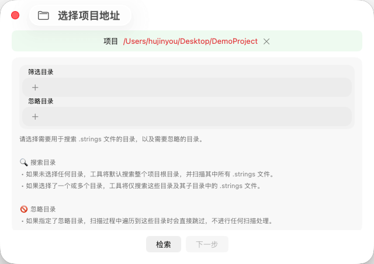
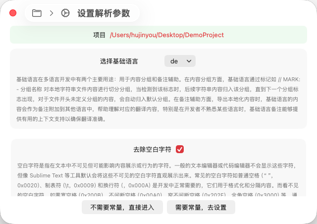
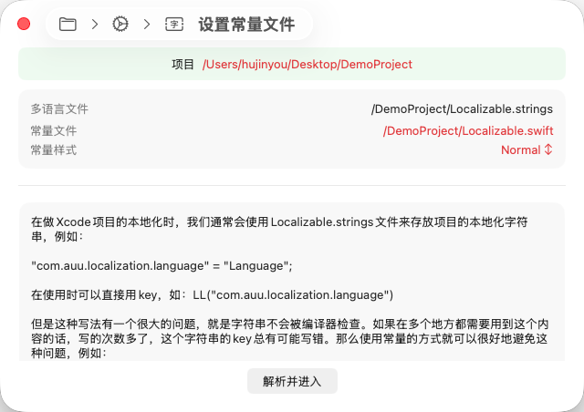

TransX 的新建项目向导采用分步式交互设计，帮助您快速完成项目的初始化配置。整个窗口界面清晰地划分为三个功能区域：
这种分步式的设计既保证了配置的完整性，又提供了足够的灵活性，让您可以随时调整之前的设置。

项目选择是新建流程的第一步，这个页面的主要功能是帮助您定位 Xcode
项目并确定多语言文件的扫描范围。在这里，您需要选择 Xcode
项目的根目录，TransX 将基于此目录开始扫描和管理所有的
.strings 文件。
为了提供更精确的文件检索能力，该页面提供了两个重要的筛选选项：
搜索目录功能允许您精确控制 TransX 扫描 .strings
文件的范围：
未选择任何目录（默认行为）：工具将从项目根目录开始，递归搜索整个项目结构中的所有
.strings 文件。这种方式适用于项目初次使用 TransX
或不确定本地化文件分布位置的场景。
选择特定目录：如果您的项目结构清晰，本地化文件集中在某些特定目录中（例如
Resources/Localizations），您可以精确指定一个或多个目录。此时，工具将仅在这些指定目录及其子目录中搜索
.strings
文件，大大提高扫描效率，避免扫描不必要的路径。
这种选择性扫描机制在大型项目中尤其有用，可以显著减少扫描时间，并避免误扫描第三方库或临时文件中的
.strings 文件。
忽略目录功能提供了一种排除机制，用于跳过不需要管理的目录：
工作原理：当您指定了需要忽略的目录后，TransX 在扫描过程中遇到这些目录时将直接跳过，不会进入其内部进行任何文件检索和处理。
典型应用场景：
Pods、Carthage、Package Dependencies）DerivedData、Build）性能优化：合理使用忽略目录功能不仅可以避免管理不必要的文件，还能显著提升扫描速度，特别是在包含大量第三方库的项目中。
完成目录配置后，点击底部的"检索"按钮，TransX
将根据您的配置开始扫描 .strings
文件，并进入下一步的参数设置环节。

解析参数配置是项目初始化的关键步骤，这些参数将直接影响 TransX
如何理解和处理您的 .strings
文件内容。本步骤提供了两个核心配置选项：
基础语言是多语言项目管理的核心概念，在 TransX 中扮演着双重角色：
基础语言对应的 .strings
文件承担着内容组织的重要职责。TransX 通过识别 Xcode 标准的 MARK
注释来实现分组管理：
// MARK: - 用户界面
"button.login" = "登录";
"button.logout" = "登出";
// MARK: - 错误提示
"error.network" = "网络连接失败";
"error.timeout" = "请求超时";分组规则详解：
// MARK: - 分组名称
标记时，会创建一个新的逻辑分组分组的实际价值：
基础语言在导出和翻译流程中提供重要的上下文支持：
翻译辅助：当导出本地化内容（如 CSV、JSON 格式）时，基础语言的文本会自动作为参考备注附加到其他语言项中。这对翻译人员至关重要，特别是在处理上下文依赖性强的短语时。
多语言对照：在 TransX 的编辑界面中，基础语言内容始终可见，作为其他语言翻译的参照基准。即使开发者不熟悉某种目标语言，通过基础语言的对照也能判断翻译的准确性。
版本追踪：基础语言通常作为文案的"源头"，所有本地化变更都基于基础语言进行。这使得内容变更追踪和版本管理更加清晰。
最佳实践建议：
基础语言应该设置为团队最熟悉的语言，通常是开发者的母语或项目的主要市场语言。这样可以确保：
- 文案表达最准确、最自然
- 分组命名清晰易懂
- 为其他语言翻译提供最可靠的参照
空白字符处理是确保多语言内容一致性和可靠性的重要功能。
可见空白字符（正常使用）：
这些字符在代码编辑器中可见或可通过格式化工具显示，是文本格式化的必要组成部分。
不可见空白字符（潜在问题源）：
实际问题案例：
// 案例1：零宽空格导致的字符串比较失败
let key1 = "user.name" // 正常字符串
let key2 = "user.name" // 包含零宽空格（在 . 前）
if key1 == key2 { // 永远不会相等！
// 这段代码永远不会执行
}
// 案例2：不可见空格导致的 UI 异常
"button.title" = "确认"; // 看起来正常，实际包含多个零宽空格
// 在 UI 上可能导致按钮文字位置偏移或尺寸计算错误数据来源： 这些不可见字符可能通过多种途径进入代码：
启用"去除空白字符"功能后，TransX 将在以下时机自动检测和清理不可见空白字符：
.strings 文件和相关常量文件中的隐藏空白字符处理结果透明化： 所有空白字符清理操作都会在日志区域详细记录，包括：
这种透明的处理机制让您可以完全掌控数据清理过程，并在需要时进行审查。
完成参数配置后，您需要决定是否启用常量模式：
"不需要常量，直接进入"：TransX
将立即开始解析筛选到的 .strings
文件，完成后直接进入主应用界面。这种方式适合小型项目或快速查看本地化内容的场景。
"需要常量，去设置"：进入常量配置步骤，设置代码常量的生成规则。强烈推荐用于生产环境项目，以获得类型安全和代码维护性的保障。

常量模式是 TransX 为 iOS/macOS 开发提供的一项核心功能，旨在通过类型安全的方式管理本地化字符串键值，从根本上解决直接使用字符串字面量带来的维护和安全问题。
在传统的 Xcode 本地化开发中，我们通常将本地化字符串存储在
Localizable.strings 文件中：
// Localizable.strings
"com.app.user.login.button" = "Login";
"com.app.user.logout.button" = "Logout";
"com.app.settings.title" = "Settings";在代码中直接使用字符串键值进行本地化：
// 传统方式 - 直接使用字符串
let loginText = NSLocalizedString("com.app.user.login.button", comment: "")
let settingsTitle = NSLocalizedString("com.app.settings.title", comment: "")
// 或使用自定义的本地化宏
let loginText = LL("com.app.user.login.button")这种方式存在多个严重问题：
// 正确的键
let text1 = LL("com.app.user.login.button")
// 拼写错误 - 编译器不会报错！
let text2 = LL("com.app.user.login.buton") // buton 拼写错误
let text3 = LL("com.app.user.longin.button") // longin 拼写错误
// 这些错误只会在运行时显示空字符串或 key 本身在大型项目中，这类错误难以发现，往往要到 QA 测试或用户反馈时才会暴露。
当需要重命名或重组本地化键值时：
// 假设这个 key 在 50 个文件中使用了 100 次
"com.app.user.login.button" = "Login"
// 现在需要改为更清晰的命名
"button.user.login" = "Login"
// 你需要：
// 1. 找到所有使用旧 key 的地方（全局搜索）
// 2. 逐一手动替换
// 3. 确保没有遗漏
// 4. 祈祷没有引入新的拼写错误这种维护工作耗时且容易出错。
// 看到这些代码，你能立即知道它们的用途吗？
titleLabel.text = LL("com.app.user.profile.edit.title")
button.setTitle(LL("com.app.user.profile.edit.save"), for: .normal)
alertMessage = LL("com.app.user.profile.edit.validation.error")
// 长字符串降低了代码的可读性
// 特别是在有多个本地化调用的代码块中// 开发者 A 使用：
LL("com.app.settings.title")
// 开发者 B 可能因为记忆错误使用：
LL("com.app.setting.title") // 少了 's'
// 或者：
LL("settings.title") // 使用了不同的命名约定
// 结果是多个相似但不同的 key，导致内容重复和管理混乱TransX 的常量模式通过自动生成类型安全的常量来解决这些问题：
// TransX 自动生成的常量文件（示例）
// LocalizationKeys.swift
struct LocalizationKeys {
struct User {
struct Login {
static let button = "com.app.user.login.button"
static let title = "com.app.user.login.title"
}
struct Logout {
static let button = "com.app.user.logout.button"
}
}
struct Settings {
static let title = "com.app.settings.title"
static let description = "com.app.settings.description"
}
}
// 或者使用更简洁的命名（可配置）
let lUserLoginButton = "com.app.user.login.button"
let lUserLogoutButton = "com.app.user.logout.button"
let lSettingsTitle = "com.app.settings.title"在代码中使用常量：
// 方式1：使用嵌套结构
let loginText = LL(LocalizationKeys.User.Login.button)
let settingsTitle = LL(LocalizationKeys.Settings.title)
// 方式2：使用简洁常量
let loginText = LL(lUserLoginButton)
let settingsTitle = LL(lSettingsTitle)// ✅ 正确 - 编译通过
let text = LL(lUserLoginButton)
// ❌ 错误 - 编译失败，Xcode 会立即标红
let text = LL(lUserLoginButon) // 常量名拼写错误任何拼写错误都会被 Swift 编译器立即捕获，将运行时错误提前到编译期。
// 输入 "lUser"，Xcode 自动补全显示：
// - lUserLoginButton
// - lUserLoginTitle
// - lUserLogoutButton
// - lUserProfileTitle
// ...
// 无需记忆完整的 key 字符串
// 避免查找 .strings 文件
// 大幅提升开发效率// 需要重命名？
// 使用 Xcode 的 "Refactor -> Rename"
// 所有引用该常量的地方会自动更新
// 完全不用担心遗漏或错误TransX 会同步更新 .strings
文件和常量文件，保证一致性。
// 对比：
// ❌ 使用字符串 - 需要猜测或查找才知道含义
titleLabel.text = LL("com.app.user.profile.edit.title")
// ✅ 使用常量 - 语义清晰
titleLabel.text = LL(lUserProfileEditTitle)常量名通常比反向域名风格的 key 更具描述性和可读性。
// 所有本地化 key 定义在一个或几个常量文件中
// 团队成员可以快速浏览所有可用的本地化内容
// 避免重复定义相似的 key
// 便于制定和遵循命名规范// ❌ 魔法字符串散落在代码各处
func updateUI() {
label.text = LL("com.app.welcome")
button.setTitle(LL("com.app.button.ok"), for: .normal)
}
// ✅ 使用常量，代码更专业更易维护
func updateUI() {
label.text = LL(lWelcomeMessage)
button.setTitle(LL(lButtonOK), for: .normal)
}// 所有开发者使用相同的常量
// 不会因为记忆错误产生不同的 key
// 代码审查时更容易发现问题
// 新成员上手更快在这个配置页面中，TransX 会列出第一步扫描到的所有
.strings 文件，您可以为每个文件单独配置常量生成规则。
为每个 .strings 文件指定对应的常量输出文件：
Objective-C 项目：可以指定 .h 和
.m 文件对
// LocalizationKeys.h
extern NSString * const kUserLoginButton;
extern NSString * const kUserLogoutButton;
// LocalizationKeys.m
NSString * const kUserLoginButton = @"com.app.user.login.button";
NSString * const kUserLogoutButton = @"com.app.user.logout.button";Swift 项目：可以指定单个 .swift
文件
// LocalizationKeys.swift
let lUserLoginButton = "com.app.user.login.button"
let lUserLogoutButton = "com.app.user.logout.button"混合项目：可以同时生成两种格式，满足混编项目的需求
路径选择建议：
Constants 或
Localization 目录下.strings
文件生成独立的常量文件，保持代码结构清晰TransX 提供三种常量生成样式，以适应不同的开发场景：
生成标准的 String 类型常量：
let lButtonLogin = "button.login"
let lErrorMessage = "error.message"
// 使用方式
let text = NSLocalizedString(lButtonLogin, comment: "")
label.text = LL(lButtonLogin)适用场景：
String 参数的 API生成 LocalizedStringKey 类型常量，SwiftUI
的本地化专用类型：
let lButtonLogin: LocalizedStringKey = "button.login"
let lWelcomeMessage: LocalizedStringKey = "welcome.message"
// SwiftUI 使用方式
struct ContentView: View {
var body: some View {
VStack {
Text(lButtonLogin) // 自动本地化
Button(lWelcomeMessage) { } // 自动本地化
}
}
}适用场景：
Text、Button、Label 等
SwiftUI 视图直接支持NSLocalizedString优势：
// ✅ 使用 LocalizedStringKey
Text(lWelcomeMessage) // 简洁
// vs
// ❌ 使用普通 String
Text(NSLocalizedString(lWelcomeMessage, comment: "")) // 繁琐生成 StaticString 类型常量，编译时字符串常量：
let lButtonLogin: StaticString = "button.login"
let lLogTag: StaticString = "app.network"
// 使用方式
print(lLogTag) // 用于日志
assert(condition, lErrorMessage) // 用于断言适用场景：
特点：
l 前缀表示 localization）完成常量配置后，点击底部按钮进入项目。TransX 将：
.strings 文件常量文件生成后，记得在 Xcode 中 Build 一次，让编译器识别新的常量定义。之后就可以在代码中享受类型安全和自动补全的便利了。